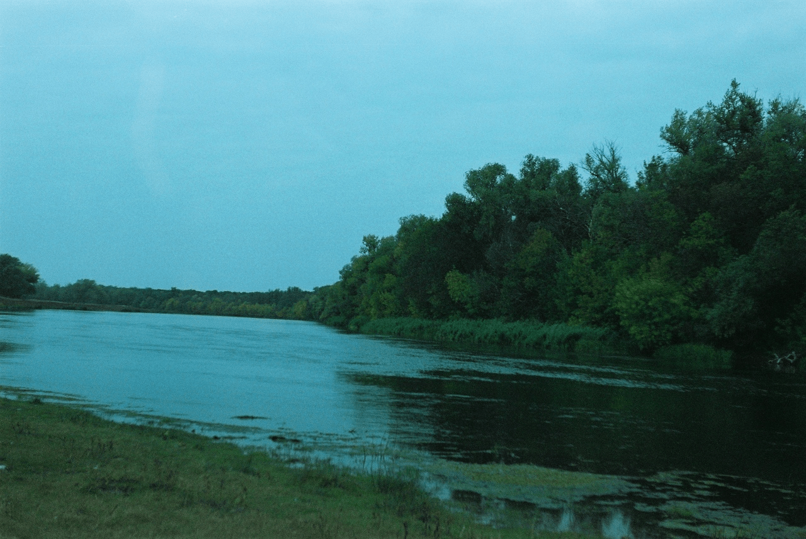

вперед по реке

Высшая добродетель подобна воде.
Вода дарит благо всей тьме существ, но
не ради заслуг.
Жить в покое, вдали от дел - вот то,
чего избегают люди,
но только так и можно приблизиться
к истинному Пути.
В покое Земля обретает величие,
сердца делаются бездонными,
а человеколюбие - истинным,
суждения обретают силу и точность.
В покое научаешься руководствоваться
в жизни главным,
и дела заканчиваются успешно,
а изменения происходят всегда вовремя.
Лишь тот, кто не стремиться оказаться
впереди всех,
может освободиться от ошибок.